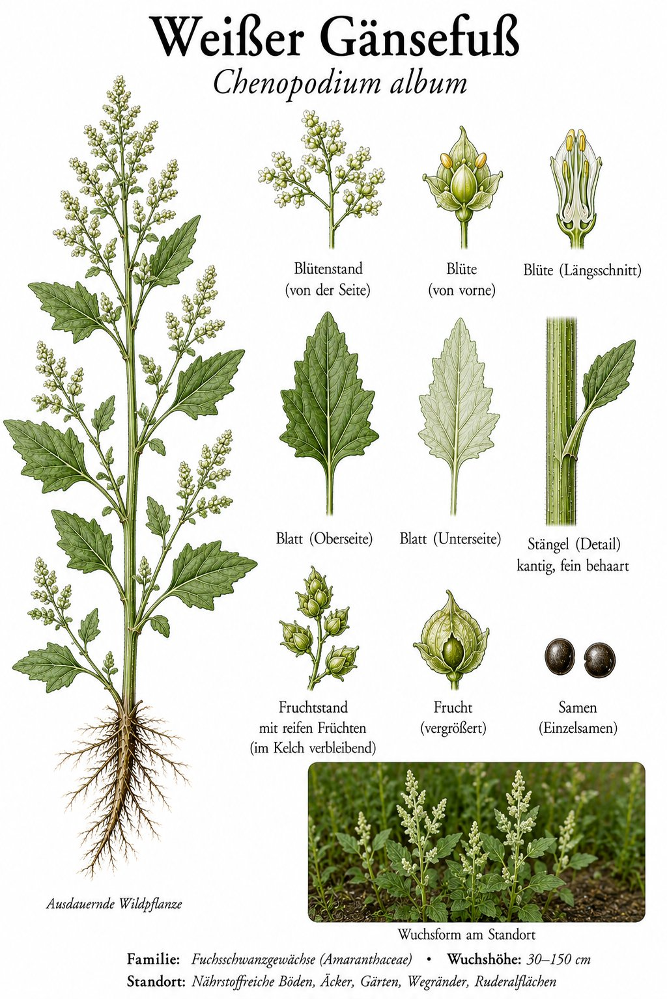

Das mehlige „Unkraut“ vom Acker — und ein Steinzeit-Spinat dazu.

Mehl auf den Blättern
Die jungen Blätter und Triebspitzen sehen aus, als hätte sie jemand mit Mehl bestäubt — ein feiner, wasserabweisender Belag aus winzigen Bläschen. Die Blattform erinnert an einen Gänsefuß, daher der Name. Die Blüten selbst sind unscheinbar grün und sitzen in kleinen Knäueln.
Älter als die Landwirtschaft
Lange bevor Spinat auf den Teller kam, aßen die Menschen Gänsefuß — gekocht schmeckt er ähnlich mild. Im Magen von Moorleichen wie dem „Tollund-Mann“ fand man seine Samen, und sein naher Verwandter ist die heute hochgelobte Quinoa. Das „Unkraut“ ist also ein uraltes Nahrungsmittel.
Wissenswertes & Merksätze
Erkennungszeichen
30–150 cm hoch; rautenförmige, oft mehlig-grau bestäubte Blätter; unscheinbare grüne Blütenknäuel. Ein typisches Acker- und Ruderalkraut.
Wilder Spinat
Junge Blätter lassen sich wie Spinat zubereiten, die Samen als Pseudogetreide nutzen. Wie bei Spinat gilt: in Maßen genießen, denn auch der Gänsefuß sammelt Oxalsäure. Sein Geschmack hat schon manchen Feinschmecker überrascht.